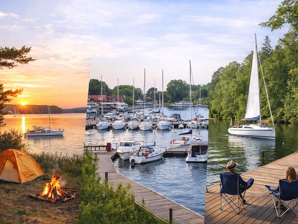

7 min czytania
Tygodniowy rejs po Mazurach – przykładowe trasy na 7 dni
Tygodniowy rejs po Mazurach to dobry sposób, żeby zobaczyć różne oblicza regionu – od dużych portów i popularnych miejscowości po spokojne bindugi i dzikie zatoki. W ciągu 7 dni można wiele zobaczyć. Warto planować każdy dzień, biorąc pod uwagę warunki pogodowe, własne możliwości oraz ilość czasu, jaką chcemy spędzić żeglując.

Wiele zależy od pogody, warunków na wodzie, rodzaju jachtu oraz tego, jak chcecie spędzić swój czas. Inaczej będzie wyglądał rejs na jachcie żaglowym, a inaczej na jachcie motorowym. Dlatego poniższe propozycje traktujcie jako punkt wyjścia – gotową inspirację, którą można dopasować do własnych planów.
Wszystkie przedstawione poniżej trasy rozpoczynają się i kończą w naszym porcie macierzystym Stranda w Giżycku.
7-dniowy rejs po Mazurach – przykładowe trasy
Poniżej znajdziecie trzy propozycje na tygodniowy rejs. Pierwsza prowadzi na północ, druga pozwala poznać południową część Szlaku Wielkich Jezior Mazurskich, a trzecia została przygotowana przede wszystkim z myślą o żeglarzach szukających ciszy i bliskości natury.
Jeżeli nie macie jeszcze wybranego jachtu, warto zajrzeć do naszej oferty i dobrać jednostkę odpowiednią do planowanej trasy. Jeśli nie posiadacie patentu żeglarskiego, sprawdźcie ofertę czarteru bez patentu.
1. Północne Mazury – spokojne miejsca i mariny z pełną infrastrukturą
Giżycko – Stranda
Start rejsu w naszym porcie macierzystym Stranda. Jeżeli godzina odbioru jachtu nie jest zbyt późna i pozwalają na to warunki pogodowe, pierwszą noc można spędzić na bindudze Zimny Kąt.
Sztynort
Kultowy mazurski port, często nazywany żeglarską wioską. Marina oferuje pełną infrastrukturę, sklep spożywczy oraz kilka miejsc z dobrym jedzeniem, m.in. Babę Pruską i znaną żeglarzom Córkę Rybaka.
Zwierzyniecki Róg
Miejsce, które pierwotnie funkcjonowało jako camping, a z czasem otworzyło się również na żeglarzy. Znajdują się tu pomosty, podstawowa infrastruktura oraz miejsce na grilla i ognisko.
Ognisty Ptak
Mniejsza marina z pełną infrastrukturą, położona przy hotelu. Można skorzystać z hotelowej gastronomii i SPA, a miejsce jest również przyjazne rodzinom z dziećmi. W pobliskich Ogonkach znajduje się sklep spożywczy.
U Melnika – Harsz
Klimatyczne miejsce z pomostem, które warto wybrać przy odpowiednich warunkach pogodowych. Przy zachodnim wietrze o sile około 3°B i większej zdecydowanie odradzamy cumowanie tutaj – wschodnie wybrzeże jeziora Dargin staje się wtedy bardzo niebezpieczne.
Jezioro Dobskie – strefa ciszy
Jezioro Dobskie objęte jest strefą ciszy, dlatego obowiązuje tu zakaz używania silników spalinowych i sygnałów dźwiękowych. Na noc można zacumować m.in. u Rajcocha lub przy Dziewiszewskim Rogu.
Sztynort
Ostatni przystanek przed powrotem do Strandy. Warto wykorzystać ten postój na uzupełnienie paliwa przed piątkowym popołudniowym ruchem – w sezonie w piątki na wodnych stacjach paliw tworzą się długie kolejki.
Inne miejsca w północnej części Mazur
Jeżeli macie więcej czasu albo chcecie zmodyfikować trasę, w północnej części Mazur znajdziecie wiele innych miejsc, w których można zatrzymać się na noc lub zrobić przerwę.
Porty w północnych Mazurach:
- Węgorzewo – EkoMarina, Keja, ZHP, Mamry
- Piękny Brzeg
- Przystań Nautica
- Port 69
- Łabędzi Ostrów
Przystanie w północnych Mazurach:
- Stanica Wodna Kietlice
- Skłodowo
- Zdorkowo
Miejsca na dziko w północnych Mazurach
- SunBila Pieczarki
- Roganty
- plaża w Radziejach
2. Południowe Mazury – porty, bindugi i popularne miejscowości
Giżycko – Stranda
Tu zaczynamy rejs. Jeżeli chcecie spokojnie rozpocząć tygodniowy wyjazd, sobotni wieczór można spędzić jeszcze w porcie Stranda. W porcie czeka na Was muzyka na żywo, pizza, dania z grilla oraz własny rzemieślniczy browar.
Leśna Keja
Przyjemna binduga z pięknym widokiem i podstawową infrastrukturą. Znajduje się tu również miejsce na ognisko, dzięki czemu jest to dobry przystanek na spokojny wieczór nad wodą.
Marina Górkło
Port po wielu latach zaczyna odżywać i jest coraz chętniej wybieranym miejscem do cumowania. Znajdziemy tu pełną infrastrukturę oraz polecaną tawernę. To również dobre miejsce na nocleg przed dalszą przeprawą przez kanały.
Ryn
W Rynie znajdziemy kilka miejsc do cumowania, w tym EkoMarinę. Z portu rozciąga się widok na panoramę miasteczka, a przy promenadzie znajduje się kilka polecanych punktów gastronomicznych. W Rynie jest również stacja paliw, więc można uzupełnić zbiornik.
Zatoka Skonał
Naszym zdaniem jedna z piękniejszych zatok w tej części szlaku. To dobre miejsce, żeby zamiast kolejnego dużego portu wybrać spokojniejszy postój i spędzić wieczór bliżej natury.
Mikołajki
Typowe turystyczne miasteczko – dużo restauracji, sklepów i wiele portów do wyboru. Jeżeli podczas rejsu macie ochotę na bardziej miejskie atrakcje, Mikołajki są naturalnym przystankiem na trasie.
Giżycko
Powrót do Giżycka to najdłuższa przeprawa tej podróży. Polecamy wyruszyć z rana i dotrzeć do Strandy w piątkowe popołudnie, aby spokojnie przygotować jacht do zdania.
Modyfikacja trasy – jezioro Śniardwy
Jeżeli chcecie przeznaczyć jeden dzień na dodatkowy etap, można ominąć jeden z powyższych punktów i popłynąć do Mariny Śniardwy. Czekają tam piękne zachody słońca, przyjemna plaża i tawerna z dobrym jedzeniem.
Uwaga na jeziorze Śniardwy: poruszamy się wyłącznie po wyznaczonym szlaku. Jezioro jest płytkie i występują na nim liczne kamienie.
Inne miejsca w południowej części Mazur
Podobnie jak na północy, również południowe Mazury dają wiele możliwości modyfikowania trasy.
Porty w południowych Mazurach:
- AZS Wilkasy
- Hotel Tajty
- Zielona Zatoka
- Marina Lester Club
- Port Bogaczewo
- Stare Sady
Przystanie w południowych Mazurach:
- Rybaczówka
- Sun Bila
- Zielony Gaj
- Zanzibar
- pole biwakowe Kula
Miejsca na dziko w południowych Mazurach:
- jezioro Tajty – wiele spokojnych miejsc do cumowania na dziko
- Skorupki
- Zatoka Mrówki
3. Południowe Mazury – trasa dla żeglarzy szukających ciszy
Ta trasa została przygotowana przede wszystkim z myślą o żeglarzach, którzy podczas tygodniowego rejsu chcą uciec od najbardziej uczęszczanych miejsc i spędzić więcej czasu blisko natury. Jej celem jest dotarcie aż na jezioro Nidzkie i poznanie spokojniejszej części Mazur – trasa sprawdzi się zarówno na jachcie motorowym, jak i żaglowym.
Giżycko – Stranda
Po odbiorze jachtu, jeżeli godzina i warunki będą sprzyjające, można od razu ruszyć przez kanały i zacumować w AZS Wilkasy.
SunPort – Stare Sady
Z Giżycka udajemy się prosto na jezioro Tałty, do Starych Sadów. SunPort jest dobrym miejscem na odpoczynek po przeprawie z Giżycka i przygotowanie się do dalszego rejsu na południe.
Ruciane-Nida
W Rucianem-Nidzie można zacumować w porcie Faryj lub Pod Dębem. Oba porty oferują pełną infrastrukturę, a przed dalszą drogą warto zrobić zakupy spożywcze na kolejne dni.
W Rucianem-Nidzie znajduje się również śluza Guzianka, przez którą przechodzimy na jezioro Nidzkie.
Jezioro Nidzkie – strefa ciszy
Dalej na południe od portu Pod Dębem, w chronionej części jeziora Nidzkiego, obowiązuje zakaz używania silników spalinowych. To właśnie tutaj zaczyna się najbardziej naturalna część trasy – bez pracy silnika spalinowego, za to z możliwością spokojnego żeglowania i nocowania w mniej uczęszczanych miejscach.
Dalszej części trasy nie będziemy tutaj szczegółowo rozpisywać. Zdecydowanie polecamy samodzielną eksplorację, własne tempo i cieszenie się pięknem trochę mniej uczęszczanych Mazur.
Powrót do Giżycka należy zaplanować tak, aby najlepiej w piątek po południu, ewentualnie w sobotę rano, być już w porcie Stranda i spokojnie przygotować jacht do zdania.
Powyższe trasy są tylko propozycjami. Zachęcamy do odwiedzenia zarówno północy, jak i południa Mazur. Przed przyjazdem warto przeanalizować podane wyżej miejsca i dopasować trasę do własnych oczekiwań, możliwości i czasu, jaki chcemy spędzić żeglując. Więcej praktycznych wskazówek dotyczących planowania rejsu znajdziecie w naszym poradniku czarterowym.
Żeglujmy po Mazurach z szacunkiem dla natury!
Mazury to nie tylko szlak żeglarski, porty i popularne miejscowości. To przede wszystkim jeziora, lasy i dzika przyroda, dlatego warto pamiętać, że podczas rejsu jesteśmy jej gośćmi.
Zostawiajmy po sobie porządek, nie zostawiajmy śmieci. Korzystajmy z portowych odsysarek do fekaliów i nie wylewajmy chemii do jeziora. Płyny do naczyń BIO nie oznaczają, że są bezpieczne dla jezior. Do mycia się często wystarczy woda lub delikatne mydełko potasowe w niewielkiej ilości. Na szlaku jest wiele miejsc, gdzie możemy wziąć prysznic lub zmyć naczynia. Nie karmmy kaczek ani innych dzikich ptaków chlebem – szkodzi to ich zdrowiu. W sezonie letnim ptaki bez problemu znajdują naturalny pokarm.
Jeżeli wybieramy nocleg na dziko, zostawmy miejsce w takim stanie, w jakim sami chcielibyśmy je zastać. Cisza, czysta woda i niezmieniona przyroda to właśnie to, co sprawia, że chce się wracać na Mazury każdego roku.
Żeglujmy odpowiedzialnie i zostawmy Mazury piękne – dla siebie i dla tych, którzy przypłyną tu po nas.
Planujecie już termin? Sprawdźcie cennik czarteru lub skontaktujcie się z nami, żeby dobrać jacht i zarezerwować rejs.
Czytaj dalej
- Czarter jachtu we wrześniu – czy to dobry pomysł? Wrzesień to dobry moment na czarter jachtu na Mazurach. Większość żeglarzy potwierdza to w prywatnej rozmowie, ale rzadziej przekłada na konkretną rezerwację – bo lipiec i sierpień wydają się bezpieczniejszym wyborem. Tymczasem wrzesień na Mazurach jest spokojniejszy, tańszy i – dla tych, którzy cenią żeglowanie bardziej niż rekreację przy basenie – po prostu bardziej żeglarski.
- Czarter jachtu – kompletny przewodnik Czarter jachtu na Mazurach to jeden z najlepszych sposobów na spędzenie urlopu blisko natury, z dala od tłumów i w swoim własnym tempie. Jednocześnie dla wielu osób — zwłaszcza przy pierwszym rejsie — jest to temat pełen pytań, niepewności i obaw: jaki jacht wybrać, ile to naprawdę kosztuje, jakie formalności trzeba spełnić i jak uniknąć typowych błędów.
- Jaki jacht wybrać dla pary, rodziny lub grupy Wybór jachtu ma realny wpływ na to, jak będzie wyglądał cały rejs po Mazurach. Zbyt mała jednostka ogranicza komfort, zbyt duża potrafi generować niepotrzebny stres, szczególnie przy manewrach portowych.
Wybrałeś termin?
Sprawdź, które jachty są wolne, albo zadzwoń do biura.